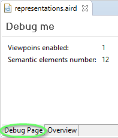
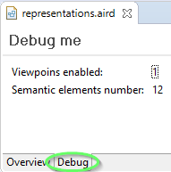
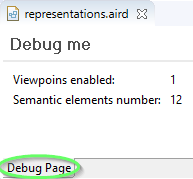
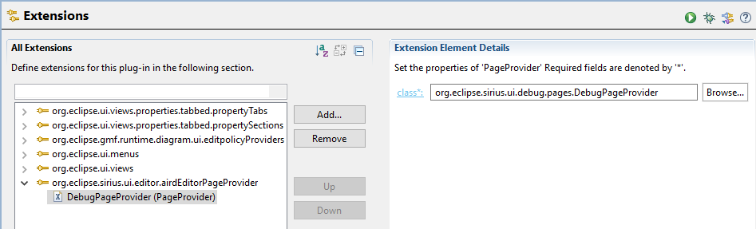

Sirius provides an aird editor with a default page allowing to handle viewpoints and representations as well as semantic models. It is the entry point to any Sirius project for end user.
Custom pages can be provided to aird editor instances to show different information not available in the default page. It can be anything from business information to aird information. The functionalities around custom page providing are the following:
Sirius offers two distinct ways of providing custom pages for aird editor:
PageRegistry as entry point.
sessionEditorPageProvider extension point as entry point.
The API is composed of the following classes:
AbstractSessionEditorPage
PageProvider
PageUpdateCOmmand
PositioningKind
PageUpdateCommandBuilder
PageRegistry
and are available in the package
org.eclipse.sirius.ui.editor.api.pages from the plugin
org.eclipse.sirius.ui.editor
To provide a custom page by using this API you have to:
AbstractSessionEditorPage and with the help of
PageUpdateCommandBuilder if needed.
PageProvider that will provide your custom page as well as other custom pages you want.
PageProvider either directly in the
PageRegistry or by using the provided extension point.
Example with the Sirius Debug Page:
When contributing a custom page, you can tell where the editor tab corresponding to your page will be located regarding other pages' tab in different contexts:
PageProvider
Whatever the context is, you always need to provide two kind of information to position your page regarding others:
org.eclipse.sirius.ui.editor.SessionEditorPlugin.DEFAULT_PAGE_ID
org.eclipse.sirius.ui.editor.api.pages.PageProviderRegistry.PositioningKind:
BEFORE kind will place your page’s tab in the aird editor before the target page’s tab. For example with the debug page before
Overview:

AFTER kind will place your page’s tab in the aird editor after the target page’s tab. For example with the debug page after
Overview:

REPLACE kind will replace the target page’s tab in the aird editor by your page’s tab. For example with the debug page replace the default page
Overview:

If a page identified by the id used to position your custom page does not exists in the aird editor when positioning your page, then your page will be added to the leftmost position.
To build a custom page you need to create a class extending
org.eclipse.sirius.ui.editor.api.pages.AbstractSessionEditorPage that also extends
FormPage.
The UI creation part of your page is handled by the methods of
FormPage with the method
createFormContent(IManagedForm managedForm) as entry point.
The
AbstractSessionEditorPage abstract class brings the following methods to implement:
Optional<PageUpdateCommand> pageChanged(boolean)
Optional<PageUpdateCommand> resourceSetChanged(ResourceSetChangeEvent)
Optional<PositioningKind> getPositioning()
Optional<String> getLocationId()
There is also a method
NotificationFilter getFilterForPageRequesting() with default behavior that can be overridden.
This method is called by the aird editor whenever a resource set event occurs on its session’s resource set. The event can be a change regarding the aird file, or the loaded resources or viewpoints.
You can internally refresh your graphic components when called according to the change event. You also can return a list of
PageUpdateCommand that the editor needs to execute to update your page by using the builder
PageUpdateCommandBuilder. For example:
return Optional.of(new PageUpdateCommandBuilder().removePage().build());
This builder allows you to build a command the owning aird editor must execute. The built command can do one or a combination of the following command:
PageUpdateCommandBuilder removePage()): when the aird editor execute this command, your page will be removed from the editor.
PageUpdateCommandBuilder reorderPage(PositioningKind positioningKind, String targetPageId)): when the aird editor execute this command, your page will be placed at the defined position. To know more about positioning, please read the section
Page Positioning
PageUpdateCommandBuilder renameTab(String newLabel): when the aird editor execute this command, the editor tab owning your page will have its label updated with the one given to build the command.
If the built command contains the remove command and a reorder, rename or both command, then the remove command will be executed but not the other(s).
If you does not need to use this functionality you must return
Optional.empty().
This method is called with true as parameter when your page just becomes visible (i.e it is selected). It is called with false as parameter when any other page than yours is selected.
You can use the parameter to avoid doing heavy computation on model changes when you know your page is not visible to the end-user, and defer these to later, when it will become visible again (i.e. when pageChanged is invoked with
true).
You also can internally refresh your graphic components when called according to the change event. You also can return a list of
PageUpdateCommand that the editor needs to execute to update your page by using the builder
PageUpdateCommandBuilder. See section
resourceSetChanged to have details about the commands.
If you want to apply page update only when the page is visible and if certain conditions are fulfilled regarding the session, then it is your responsibility to keep track of what happens since the last page selection with calls to
resourceSetChanged(ResourceSetChangeEvent) to know if some update must be done.
If you does not need to use this functionality you must return
Optional.empty().
This method defined with a default implementation in
AbstractSessionEditorPage allows to prevent calls to
AbstractSessionEditorPage.resourceSetChanged(ResourceSetChangeEvent) for events you does not want to consider because you know your page will not refresh anything from these.
By default the filter
org.eclipse.emf.transaction.NotificationFilter.NOT_TOUCH is used. This filter makes sure you are not called when all the event’s notification does not change any values.
You can override this method to provide your own filter.
This method is used when your page is created to position it among other pages. See section Page Positioning to now more about how positioning works.
It defines the kind of positioning to achieve.
If you don’t want to position your page relatively to another one, you can return
Optional.empty(). In this case your page will be added to the leftmost position (first position).
This method is used when your page is created to position it among other pages. See section Page Positioning to now more about how positioning works.
It defines the page id from which your page should be positioned relatively to.
If you don’t want to position your page relatively to another one, you can return
Optional.empty(). In this case your page will be added to the leftmost position (first position).
The PageProvider responsibilities are:
To build a custom page you need to create a class extending
org.eclipse.sirius.ui.editor.api.pages.PageProvider.
This abstract class brings the following methods to implements:
Map<String, Supplier<AbstractSessionEditorPage>> getPages(SessionEditor)
NotificationFilter getFilterForPageRequesting()
boolean provides(String)
This method returns all custom pages instances extending
AbstractSessionEditorPage to initialize.
This method must return a map of page id to its supplier initializing a new instance of the page.
For example with the debug page:
Map<String, Supplier<AbstractSessionEditorPage>> resultMap = new HashMap<>();
resultMap.put(DebugPage.PAGE_ID, () -> {
return new DebugPage(editor, DebugPage.PAGE_ID, DEBUG_PAGE_TITLE);
});
return resultMap;
You can use the given parameter to determine if your pages should be provided at the moment. You have access to the editor
org.eclipse.sirius.ui.editor.SessionEditor asking for the pages of your provider. From this parameter you can access to its session by using the method
org.eclipse.sirius.ui.editor.SessionEditor.getSession(). You also can use any singleton like
PlatformUI to know if your pages should be created at the moment.
If the required conditions to display a page that can be computed from the session are not verified, then you should not return a new instance of this page.
The method is called when:
getFilterForPageRequesting.
PageProvider is added or removed from the providers registry.
This method defined with a default implementation in
PageProvider allows to prevent calls to
PageProvider.getPages(SessionEditor) for events you does not want to consider because you know that the initial conditions to show your pages will not be fulfilled.
By default the filter
org.eclipse.emf.transaction.NotificationFilter.NOT_TOUCH is used. This filter makes sure you are not called when the event does not change any values.
You can override this method to provide your own filter.
This method tells if your provider can create a page instance of the given id as parameter. It is used when computing page positions.
Warning: If you don’t return true for the id of a page you provide, then positioning may not be what you expect.
You can create pages at a given position of an editor only when some initial conditions are fulfilled. This mechanism involves the methods:
PageProvider.getPages(SessionEditor)
AbstractSessionEditorPage.getPositioning()
AbstractSessionEditorPage.getLocationId()
You also can dynamically change the page position by reacting to session’s resource set events or even tell the editor to remove the page no longer useful. This mechanism involves the methods:
AbstractSessionEditorPage.resourceSetChanged(ResourceSetChangeEvent)
AbstractSessionEditorPage.pageChanged(boolean)
So we have two distinct mechanism allowing for page positioning that can be conflicted if not careful.
For example, your
AbstractSessionEditorPage page can dynamically be removed when a condition A is verified. But your page creation initial condition in
PageProvider is also A. In this situation, if A is verified a first time, the page is created. Then if A is verified a second time, the page will be removed dynamically and created again.
So to avoid conflicts, the page position and creation/removal must have the most specific conditions in the
PageProvider and the less specific in
AbstractSessionEditorPage
For example, if a page can be created from
PageProvider when condition A and B are verified, then this page can be dynamically removed only if !A or !B is verified but not if another condition is verified like C or !C.
When your PageProvider providing your custom pages is done, you have to register it to Sirius so it can be use to display your pages in aird editors.
You have two ways to do that either by using the
PageRegistry or an extension point.
The
PageRegistry is the registry containing all
PageProvider used by aird editors.
To be used, your provider can be registered in this registry.
You can do this programmatically by calling the method
org.eclipse.sirius.ui.editor.SessionEditorPlugin.getPlugin().getPageRegistry().addPageProvider(parameter) with a new instance of your page provider as parameter.
The extension point
org.eclipse.sirius.ui.editor.sessionEditorPageProvider allows you to define the class of your page provider that should be taken in consideration when Sirius populates pages of aird editors:
